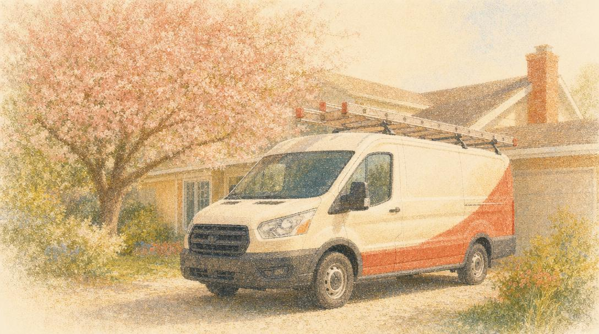
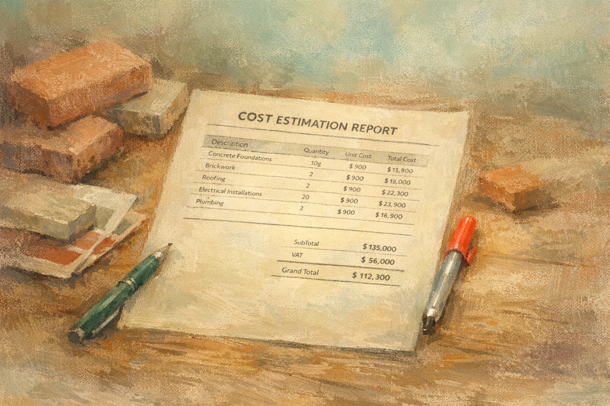
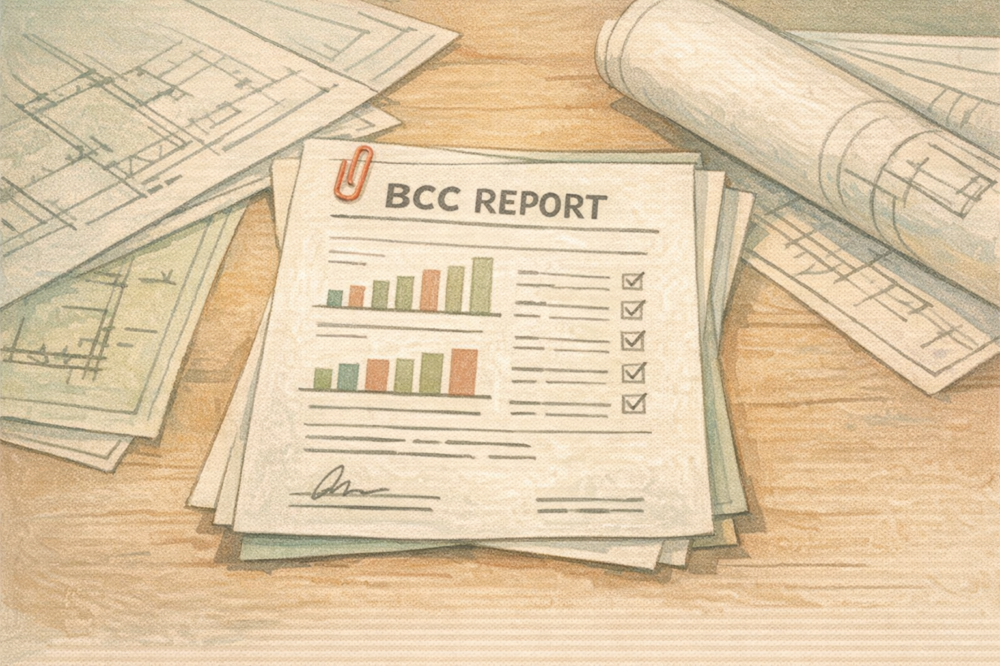
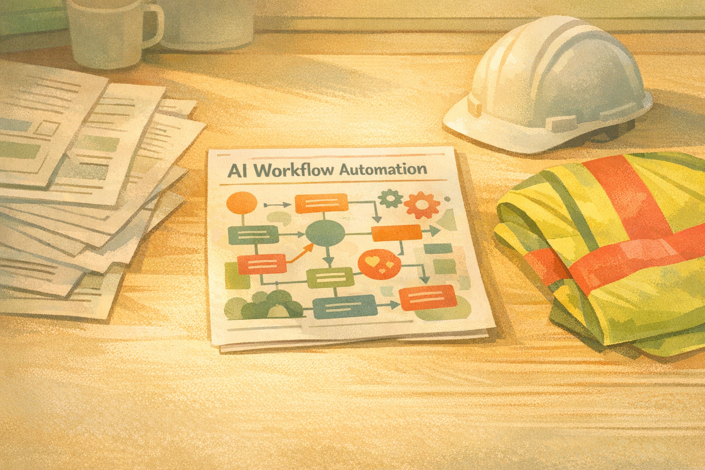

Most subcontract businesses operate with fragmented systems and manual processes. formattion ai designs and implements automation infrastructure that standardises operations and removes administrative overhead.

Perspectives on automation, operational systems, and what's changing in the subcontract trades sector.



formattion ai was founded by people who understand how subcontract businesses actually operate — the real administrative weight of running a site, managing a team, and chasing invoices at the same time.
Our focus is narrow by design. We work exclusively with UK subcontract trade businesses between £500k and £5m turnover. That specificity means our systems are built for real operational conditions, not general use cases.
We use n8n, OpenAI, and Airtable to build predictable, repeatable automation infrastructure. No proprietary lock-in. No black-box systems. Everything we build is documented and transferable.
For is the AI assistant embedded in formattion ai. Calm, direct, and efficient — For handles initial enquiries, qualification conversations, and system walkthroughs. For is not a chatbot. For is a structured operational interface.
Fill in the form. We'll review your details and reach out within one business day to arrange your free operations audit.
Every engagement starts with a free build. You validate the system before committing to anything. Retainers only begin after deployment.
Validate the system before committing. We build, you approve. The retainer only starts once you go live.
Scope-dependent setup fee. Founding rate locked for the life of the engagement.
After founding tier closes. Same methodology, full scope, standard rate.
Full-scale implementation. Multi-workflow infrastructure. Enterprise-grade delivery within a lean model.
AI automation for construction subcontractors
In the high-pressure world of construction subcontracting, every second counts and every penny matters. With margins tight and competition fierce, AI-driven automation tools are no longer just a luxury—they're a necessity. These tools promise to streamline operations, cut costs, and improve efficiency. If you're not already using them, you could be leaving money on the table and risk falling behind your competitors.
AI automation can transform how you manage quoting, scheduling, and compliance paperwork. By automating these time-consuming tasks, you free up valuable hours, allowing you to focus on strategic planning and business growth. This operational efficiency is crucial in a sector where every minute saved can directly impact your bottom line.
The construction industry is seeing a steady rise in AI adoption, with many subcontractors already reaping the benefits. These tools are designed to integrate seamlessly into your existing workflows, meaning you don't need to overhaul your entire operation to see improvements. The cost savings and efficiency gains can be substantial, putting you ahead of the competition.
Ignoring AI automation isn't just a missed opportunity; it's a risk. Competitors who adopt these technologies are already gaining a competitive edge. As they streamline their operations and cut costs, they become more attractive to clients. Falling behind could mean losing contracts and seeing your profitability decline.
For UK construction subcontractors, AI automation is a strategic move towards sustained competitiveness and profitability. By integrating these tools, you'll not only enhance your operational efficiency but also position your business to secure more contracts. The ability to deliver projects faster and more cost-effectively will set you apart in a crowded market. Don't let competitors outpace you; the time to act is now.
Ready to bring AI automation to your business?
Quotes taking four hours to prepare are now done in 30 minutes. AI tools, like those outlined by Omdena, are autonomously managing workflow tasks that once consumed subcontractors' nights and weekends. Compliance paperwork, scheduling, even quoting are being automated, freeing up time to focus on growth.
Agentic AI tools are stepping into the construction realm, dynamically adapting to tasks and managing administrative burdens. Companies like Slack have highlighted tools that can automate scheduling, compliance, and quoting processes, significantly streamlining operations for subcontractors. This means less time on admin and more on site.
The adoption rate of these AI tools is accelerating. According to Stackone, over 120 agentic AI tools are operational across various industries, including construction. Subcontractors are beginning to see the tangible benefits, which are prompting faster adoption than initially expected. Those who integrate AI are already reporting reduced operational costs and improved efficiency.
Subcontractors ignoring these developments risk falling behind. Competitors leveraging AI to cut costs and speed up workflows will submit quotes faster and deliver projects more efficiently. This efficiency translates directly into winning more contracts and securing market share, while those who don't adapt may struggle to keep up.
For UK subcontractors, the time to evaluate AI tools is now. This year, consider how automating workflows like quoting and compliance can free up your schedule and potentially increase your profitability. It's about preparing for a shift, not immediate overhaul. Begin researching which AI solutions align with your business needs to stay competitive.
Explore how formattion.ai can help streamline your subcontracting business today.
Quotes taking days to finalize. Compliance paperwork piling up. Job schedules constantly shifting. These are the daily headaches for UK subcontractors turning over £500k to £5m. Now, AI-driven workflow automation tools promise to change that. Low-code platforms are making these tools accessible without deep tech know-how. A few contractors have started using them to automate quoting and scheduling. The results? Faster turnaround, less manual input, and fewer errors.
Low-code AI tools, like those spotlighted by Vellum AI, are reshaping how subcontractors handle everyday tasks. These platforms enable swift deployment without needing extensive technical skills. They automate quoting, scheduling, and compliance paperwork, allowing subcontractors to focus on core activities. The tools are designed to quickly integrate with existing systems, slashing the time spent on administrative burdens.
The adoption of these tools is accelerating faster than expected. According to Slack's recent report, construction businesses are rapidly embracing AI workflow automation to tackle inefficiencies. The motivation? Cost pressures and the need for faster project turnarounds. These tools are no longer confined to tech-savvy firms. The low-code nature means even smaller subcontractors can implement them quickly and without high upfront costs.
Failing to act could leave subcontractors struggling to keep up. Those ignoring AI tools risk losing contracts to more efficient competitors. While others send quotes and schedules within hours, manual processes could drag yours out for days, risking client dissatisfaction and lost opportunities. Margins become thinner as the competition grows tighter, and inefficiencies are less tolerated by clients.
Subcontractors must prepare to incorporate AI tools into their workflow this year. Start by assessing the time and resources spent on quoting, scheduling, and compliance. Identify where automation can cut down this load. Consider low-code platforms that align with your current systems. Get ready to trial these tools. Doing so will ensure you're not left behind as others in the industry move swiftly forward.
Discover how AI can streamline your operations at formattion.ai.
Tender responses consuming hours you don't have? Agentic AI workflows can autonomously manage compliance paperwork, tender submissions, and variation claims. A few UK subcontractors have already begun to deploy these systems, slashing their manual oversight and freeing up time for strategic tasks.
Agentic AI systems, capable of autonomous planning and execution of complex workflows, are reshaping subcontractor operations. These systems handle tasks like compliance paperwork, tender responses, and variation claims with minimal human intervention. This technology is now available and tested in real-world scenarios, offering a glimpse into a more efficient future.
The pace of adoption is accelerating faster than anticipated. With several UK subcontractors already integrating agentic AI into their daily operations, the technology is proving its worth. According to recent reports, businesses that have implemented these systems see immediate reductions in manual errors and significant time savings.
Subcontractors ignoring this shift risk being outpaced by competitors who embrace it. Expect slower job completion, increased operational costs, and missed opportunities due to outdated processes. In a market where speed and precision are crucial, lagging behind in technology could mean losing lucrative contracts.
This year, UK subcontractors should start evaluating where agentic AI can fit into their operations. Consider areas bogged down by paperwork or repetitive tasks. Evaluate potential partners or systems that can introduce automation gradually. Prepare for a shift that will redefine how you manage projects and client interactions. Start planning for implementation now to avoid playing catch-up later.
Explore how agentic AI can streamline your operations at formattion.ai.
The British Chambers of Commerce published a report in March 2026 with a figure that demands attention: 54% of UK SMEs are now using AI. In 2024, that figure was 25%. It has more than doubled in two years, and the firms leading that shift are not slowing down.
The BCC surveyed 668 businesses between January and February 2026. Firms already using AI reported strong, consistent productivity gains. Those not yet on it reported falling short of their own targets for the year. The split is not even across sectors. Professional services and B2B firms are moving fastest. Construction and manufacturing are the slowest to adopt. That data point is not an indictment. It is a description of where the opportunity still sits — and where the risk is growing.
In 2024, holding back made sense. The tools were new, reliability was uncertain, and watching others pilot first was a reasonable position. That is harder to defend now. When half the businesses in your market are assembling quotes faster, responding to enquiries before you have, and clearing compliance documents in a fraction of the time, the effect shows up in your win rate before it shows up in your accounts. Speed and consistency are visible to clients and principal contractors. Manual processes are not invisible. They are just slower.
The tasks AI handles best in a subcontracting business are the ones consuming the most time for the least strategic return: first-draft RAMS, payment application assembly, enquiry acknowledgement, document chasing. These are not decisions. They are process. AI runs process faster and more consistently, without pulling your contracts manager or estimator away from the work that actually requires their judgement. That is the practical case — and it does not require a large technology budget or a specialist hire to start.
"Construction is one of the slowest sectors to adopt AI. That was a defensible position in 2024. In 2026, it is a gap that shows up in your margins."
Payment applications are the lifeblood of a subcontract business. They determine when money arrives, how much arrives, and whether disputes eat into margins before the job is even finished. Yet for most firms turning over between £500k and £5m, the application itself is still assembled by hand — spreadsheets, PDFs, email threads, and memory. The cost of that process is rarely calculated. It should be.
A typical payment application for a mid-size subcontractor involves pulling together a schedule of values, attaching supporting documents, reconciling variations, and formatting everything to the principal contractor's requirements. Done manually, this takes between two and four hours per application. With twelve to twenty applications per year across active projects, that is between 24 and 80 hours of billable time spent on administration that produces no additional revenue. When you add in the time spent chasing, responding to queries, and correcting errors, the figure climbs further.
Most payment disputes do not begin with bad faith. They begin with incomplete or inconsistent documentation. A variation that was agreed verbally on site but never logged. A daywork sheet submitted without a corresponding instruction. An application that references a different schedule version than the one the client holds. AI agents that sit inside your operational workflow — connected to your email, your site communications, and your project records — can catch these gaps before the application is submitted. That shift from reactive to preventive has a direct impact on dispute rates and cash collection speed.
The implementation is not complex. An AI agent monitors the project folder and email thread for variation instructions, daywork records, and programme updates. At the application date, it assembles a draft — pre-populated with the current schedule of values, a log of agreed variations, and supporting attachments flagged from the project record. The contracts manager reviews, adjusts, and submits. Total active time: under 30 minutes. The agent also sets a follow-up trigger seven days before the due date if no payment notice has been received — removing the chase from the to-do list entirely.
Speed matters as much as accuracy. Every week a payment application is delayed — because it sat in a contracts manager's queue while they were on site — is a week of cash flow foregone. For a firm with a monthly application cycle, a consistent two-week delay to submission can shift the effective payment date by a full month. Automating the assembly removes the queue. Applications go out on the agreed date, every time, regardless of how busy the office is. For businesses operating close to their working capital limit, that consistency is not a convenience — it is a structural advantage.
"The application that goes out on time, with clean records attached, gets paid faster and disputed less. That is not an AI story. It is a cash flow story."
Risk Assessments and Method Statements are a legal requirement on every site. They are also, for most subcontractors, one of the most time-consuming and undervalued documents in the business. A principal contractor expects them before mobilisation. A subcontractor produces them from scratch each time — copying and editing last month's version, hoping nothing important gets missed. AI agents can produce a site-specific, compliant first draft in under ten minutes. The question is no longer whether you can afford to implement this. It is whether you can afford not to.
For a firm running eight to fifteen active projects per year, RAMS production can consume between 40 and 120 hours annually — and that is before revisions requested by the principal contractor or CDM coordinator. The person writing them is typically a contracts manager or senior site supervisor: the highest-cost resource in the business. They are doing work that is largely templated and repetitive, with small but critical site-specific variations. That combination — high-value staff, repetitive task, low tolerance for error — is precisely where AI performs best.
The most common compliance failure in RAMS documents is not the absence of content — it is generic content that has not been adapted to the specific site conditions. A ground-floor M&E installation in a live hospital environment has different risk parameters to the same scope in a new-build commercial shell. An AI agent that has been briefed on the project — location, access constraints, existing services, principal hazards, programme dates — can produce a document that reflects those specifics from the outset. The contracts manager's job becomes review and sign-off, not composition. That is the right use of their expertise.
The workflow is straightforward. When a new project is awarded, the agent is briefed — either via a structured intake form or by reading the contract documents and preliminary information pack. It cross-references the firm's library of approved method statements and hazard registers, selects the relevant sections, adapts them to the site-specific inputs, and produces a draft in a standard format. The draft goes to the contracts manager for review. Revisions are tracked. The final document is logged against the project record automatically. Turnaround time: under two hours from project intake to reviewed draft. Previously: one to three days.
Delayed RAMS submission is one of the leading causes of delayed mobilisation in UK subcontracting. When RAMS are late, site access is withheld. When site access is withheld, the programme slips. When the programme slips, the subcontractor is exposed to delay claims — often from the same principal contractor who was waiting on their paperwork. Automating the first draft eliminates the queue. A document that previously waited three days for a contracts manager to find time now goes out within hours of the project being confirmed. The downstream effect on mobilisation certainty — and on the relationship with the principal — is measurable.
"RAMS that are late are not just a compliance problem. They are a cash flow problem, a relationship problem, and a programme problem. Automation removes the delay at source."
We automate your health & safety processes to keep you compliant, reduce risk, and remove the constant burden of paperwork.
The right documents in the right place before work starts — every site, every project, every time.
We replace your Health & Safety Manager — with reduced risk, consistent compliance, and no more chasing paperwork across sites.
We help you stay visible, look professional, and generate consistent enquiries — without needing to manage social media yourself.
Your day's work on site becomes next week's enquiries — captured, published, and routed automatically.
We replace your social media manager — with a consistent, professional presence that builds trust and generates opportunities, without the time commitment.
We help you win more work by ensuring every enquiry is captured, tracked, and followed up properly — without relying on memory or manual admin.
From first enquiry to signed job — nothing falls through the gap between your inbox and your diary.
We replace your business development manager — with more enquiries converted into work, a clearer pipeline, and no missed opportunities.
We provide an intelligent, always-on assistant that manages your day-to-day admin, communication, and organisation — allowing you to focus on running the business.
An assistant that never sleeps, never forgets, and never forwards you an email that could have been handled.
Acts as your personal assistant — with fewer interruptions, better organisation, and significantly more time to focus on high-value work.
We streamline how your team is managed, trained, and communicated with — ensuring consistency across your workforce and reducing admin.
Every card in date, every induction done, every message acknowledged — without a spreadsheet anyone dreads opening.
We replace your HR manager — with a more organised, compliant, and accountable workforce, and fewer communication gaps.
Your monthly retainer ensures your systems continue to run smoothly, improve over time, and adapt as your business grows.
Unlike static software, your systems are designed to learn and improve the more they're used.
Systems that don't just work — they get better, more efficient, and more valuable the longer they are in place.
Most subcontractors have a logo — but no consistent brand behind it. We create a complete branding system that ensures your business looks professional, consistent, and credible across every touchpoint.
One coherent brand — from the van door to the tender submission.
A professional, consistent brand that builds trust with main contractors and clients — holding together across every touchpoint.
Your website should reflect the quality of your work and support your business in winning new opportunities. We design and build modern, professional websites tailored to subcontractors in construction.
Not a brochure site — a working front door for your business, wired into the systems that convert enquiries into jobs.
A professional online presence that builds credibility and generates enquiries — wired directly into the systems that convert them.
This policy explains how Formattion AI collects, uses, and protects information you provide through our website. We keep it short and plain.
We collect only what you give us directly — your name, email address, phone number, and business details when you submit a contact form, request a quote, or chat with us. We do not track you or collect data passively beyond what is needed to run the site.
Your information is used solely to respond to your enquiry and deliver the services you have requested. We do not sell, rent, or share your data with third parties for marketing purposes.
Submissions are processed through secure automation workflows and may be stored in cloud-based tools used to manage client communication. We take reasonable measures to protect your information from unauthorised access.
We use browser localStorage only to remember your display preference (light or dark mode). We do not use tracking cookies or third-party analytics.
You may request access to, correction of, or deletion of any personal data we hold about you at any time. To do so, reach us via our contact page.
Questions about your data? We're happy to help.
This policy will be updated as our services evolve. Material changes will be reflected in the date above.
A verbal instruction on site to extend the programme by two weeks is worth money. So is the additional groundworks the principal asked for on a Thursday afternoon. Neither gets paid unless they are logged, priced, and submitted correctly — and most small subcontracting firms are doing that by hand, days after the event, when the detail is already fading. That delay is not an inconvenience. It is the mechanism by which variation money disappears.
Variation orders fail at the capture stage more often than the pricing stage. The site manager knows a change happened. The principal knows a change happened. But unless someone writes it down that day — in a format the principal will accept — it becomes a disputed item at final account. UK subcontractors running five to fifteen projects simultaneously are generating dozens of potential variation claims per month. The ones that get submitted are the ones someone had time to document. The rest get absorbed into margin.
An AI agent sitting in the background of site communications changes that calculus. It reads incoming emails, WhatsApp logs synced to the project record, and drawing revision notifications. When it detects a change instruction — formal or informal — it flags it, drafts a variation notice against the live rate schedule, and queues it for the contracts manager to review and send. The whole cycle, from instruction to submitted notice, can run in under four hours. Previously it ran in four days, if it ran at all.
The data on what this costs is not abstract. A subcontractor turning over £2m typically carries ten to twenty live variation claims at any time. If two or three of those are lost to late submission or poor documentation each month, that is £15,000 to £40,000 per year absorbed into cost rather than recovered as revenue. For a business running on a 3% net margin, that figure is the difference between a profitable year and a break-even one.
The argument for automating variation capture is not about technology. It is about whether money earned on site actually arrives in the bank. Manual logging and delayed submission are not staffing problems. They are systems problems. AI agents that sit inside project communications and generate variation notices on receipt are a direct fix — and the implementation does not require new software or a new hire.
Find out how this applies to your specific operation at formattion.ai.
By April 2026, the Construction Industry Scheme (CIS) will require monthly submissions, even for periods with no subcontractor payments. Missed filings will attract penalties. A few forward-thinking subcontractors have already turned to AI-driven compliance tools to automate this task, ensuring accuracy and timeliness. These tools are quickly becoming indispensable.
April 2026 marks a pivotal change. CIS will demand monthly returns from all subcontractors, regardless of activity. AI-driven tools are stepping in to manage these submissions automatically. This technology ensures accuracy and timely compliance, reducing the administrative load and mitigating the risk of penalties.
Subcontractors are rapidly adopting AI compliance tools due to the looming CIS changes. Sources reveal a sharp increase in inquiries and early implementations among UK firms, driven by the urgent need to avoid financial repercussions.
Subcontractors ignoring these tools face a clear risk. Late or inaccurate CIS returns could lead to significant fines. Beyond financial penalties, reputational damage from non-compliance could strain client relationships. The cost of inaction is steep and avoidable.
This year, UK subcontractors must assess their current compliance processes. With the April 2026 deadline approaching, exploring AI-driven compliance tools is essential. Early adoption will not only ensure timely CIS returns but also free up valuable administrative resources. This preparation phase is crucial to sidestep penalties and maintain smooth operations.
Explore how AI-driven compliance tools can secure your CIS submissions at formattion.ai.
Subcontractors face the ongoing challenge of maintaining up-to-date and compliant RAMS documents. Agentic AI offers a solution by autonomously managing these documents, reducing compliance errors. Several UK subcontractors have adopted this technology to streamline their compliance processes, significantly cutting down on administrative workload.
Agentic AI systems transform RAMS document management by autonomously updating and ensuring compliance with the latest regulations. This technology adapts dynamically to new requirements, minimizing the risk of costly errors and penalties. Subcontractors using agentic AI report significant reductions in time spent on administrative tasks, allowing them to focus on core operations.
The adoption of agentic AI is accelerating more quickly than anticipated. Omdena reports that real-world applications demonstrate its value in managing complex workflows like RAMS compliance. The technology's ability to adapt to changing regulations makes it an attractive option for subcontractors aiming to streamline their compliance processes.
Ignoring agentic AI could have severe consequences. Subcontractors who neglect this technology risk compliance errors, leading to legal penalties and project delays. These issues directly impact profit margins, creating additional financial strain. In an industry where precision and timeliness are crucial, failing to update compliance processes could result in lost projects and reduced competitiveness.
For UK subcontractors, 2026 is the year to start considering agentic AI for RAMS management. As regulations change, the ability of AI to keep documents compliant autonomously will become a necessity rather than a luxury. Subcontractors should assess their current compliance processes and explore how agentic AI can integrate into their workflows to reduce errors and save valuable time.
Discover how agentic AI can streamline your compliance processes at formattion.ai.
A project manager checks his phone; another team is delayed by two days due to a missed delivery of materials. This is not just a scheduling error. It's a costly setback, one that AI-driven scheduling tools are now preventing. By analyzing timelines and resource availability, these tools ensure your crew and materials are where they need to be, exactly when they should be.
AI-driven scheduling tools are transforming project management for subcontractors. These systems meticulously analyze project timelines and resource availability, leading to optimized allocation of labor and materials. This ensures that teams are not idly waiting for materials or dealing with scheduling conflicts. AI tools guarantee that resources and personnel are precisely where they need to be, exactly when required.
The adoption of AI scheduling tools is gaining momentum. Industry reports indicate that companies are experiencing tangible improvements, such as reduced project delays and cost savings. The technology is being adopted faster than anticipated as firms recognize its immediate impact on project efficiency. Contractors are finding themselves able to submit more competitive bids by ensuring timely and efficient project delivery.
Neglecting these tools can have significant repercussions. Subcontractors who rely on manual scheduling face more than just inefficiency. They are likely to encounter frequent project overruns, leading to reduced profit margins as labor costs rise and penalties accumulate. Misallocation of resources not only incurs financial costs but also damages reputations, as clients are more likely to remember delays than budget adherence.
In 2026, subcontractors should consider integrating AI scheduling tools to maintain project timelines and budgets effectively. These systems provide a practical solution to minimize delays that can erode profit margins. Begin by evaluating the shortcomings of your current system and identifying how AI can address these gaps. Familiarize yourself with available tools and prepare to invest in the future of project management.
Understand how AI-driven scheduling tools can transform your project delivery with formattion.ai.
Imagine cutting your site induction time in half while improving safety compliance. New AI systems are doing just that. They automate the entire process, ensuring every worker receives the correct safety training before setting foot on site. This isn't just theory. Several UK subcontractors are already seeing the benefits. No more manual box-ticking. No more rushing through critical safety protocols. It's a systematic overhaul that reduces human error and minimizes compliance risks. For the subcontractor, this means a faster start on projects and fewer costly interruptions.
AI-driven automation tools are now being used to streamline site induction processes. These tools can automate the distribution, completion, and verification of safety training materials. They ensure that every worker meets compliance standards before beginning work, thus reducing the risk of safety breaches. Companies like Ecosire are at the forefront, integrating AI into induction processes to create an efficient onboarding experience. The advantage is clear: subcontractors can reduce induction times significantly, freeing up resources and starting projects sooner.
The adoption of AI in construction is moving faster than many anticipated. According to a recent report by Ecosire, AI tools for business automation are set to become standard by 2026. Subcontractors who have already implemented these systems are experiencing immediate gains. With AI handling repetitive tasks, human resources can focus on more complex and critical issues. This shift is not just about efficiency; it's about maintaining relevance. As more firms adopt AI, those lagging will find it increasingly difficult to compete on speed and compliance.
Failing to act on this now could cost subcontractors dearly. Without AI, site inductions remain lengthy and prone to human error. This can lead to non-compliance issues, which carry hefty penalties and the potential for project delays. Competitors using AI will move faster and with more accuracy, winning more bids and securing their place in the market. For a subcontractor, the question isn't if they can afford to implement AI, but if they can afford not to. The cost of inaction is measured in lost opportunities and escalating risks.
By 2026, AI automation in site inductions will likely be an industry norm. UK subcontractors should start assessing their current induction processes now. Identify bottlenecks and areas prone to errors. Evaluate AI solutions that can integrate with existing systems. Consider the long-term savings in time and compliance costs against the upfront investment. Preparing for this transition means staying informed about new tools and participant experiences. Early adopters will not only streamline operations but also position themselves as leaders in a competitive market.
Explore how AI can transform your site inductions at formattion.ai.
Six months. That's how long many subcontractors wait to see the money they're owed from retention payments. The administrative tangle is real: papers shuffled, emails ignored, payments delayed. AI tools are stepping into this mess. They track, chase, and ensure you get paid on time. This is not theory. Subcontractors using AI for retention chasing are already seeing their cash flow improve. The burden of endless follow-up calls and emails is easing. And with financial stability on the line, every subcontractor should be paying attention.
AI tools are now automating the tedious task of chasing retention payments, a crucial financial component for subcontractors. These systems track outstanding payments, send reminders, and update ledgers autonomously. For subcontractors, this means reducing the risk of human error and ensuring timely payments. Ecosire reports that AI agents, already in use, are cutting the time spent on retention chasing by up to 40%. The implications for cash flow are significant, with many subcontractors reporting smoother financial operations.
The pace at which AI is entering the arena of business automation is faster than many expected. Sources reveal that by 2026, AI adoption in the construction industry could reach unprecedented levels due to its proven ROI. The appeal is clear: less administrative burden and faster payment cycles. AI's integration into retention workflows is not just a prospect; it's happening now. Companies that have adopted these tools are already setting new benchmarks, showing what's possible with reduced manual intervention.
Ignoring this trend comes with real risks specific to subcontractors. Those who do not automate retention chasing may face delayed payments, making it difficult to maintain cash flow for paying suppliers and staff. This could lead to strained client relationships and a reduced ability to bid competitively on new projects. As competitors equipped with AI tools ensure their financial operations are reliable, those sticking to manual methods may struggle to invest in growth and seize new opportunities. Falling behind in cash flow management can make every contract a financial tightrope walk.
For UK subcontractors, 2026 will be a pivotal year. As AI tools become more prevalent, subcontractors should assess their current retention chasing processes. Evaluate the time spent and the cost of late payments. Consider the benefits of automated systems that can ensure timely payments and better cash flow management. Monitor how competitors are implementing AI solutions and the results they achieve. It’s not about adopting technology for its own sake, but about securing a stable financial future. Start planning now to integrate AI solutions that align with your business goals.
Discover how AI can streamline your retention processes at formattion.ai.
Bids that used to take days can now be prepared in hours. AI-powered estimating tools are changing the way construction subcontractors approach project cost estimation. These tools analyze historical data, market trends, and current material costs to produce precise estimates quickly. For subcontractors juggling multiple bids, this means less time agonizing over spreadsheets and more time securing profitable projects. The shift isn't just about speed. It's about accuracy that wins contracts and keeps margins healthy.
AI-powered estimating tools are redefining cost estimation processes. By processing vast amounts of historical data, these tools provide subcontractors with the ability to quickly generate accurate cost projections. They integrate market trends and current material prices to refine estimates, eliminating the guesswork often involved in manual calculations. Companies like Stellium Consulting highlight these solutions as essential for 2026. They are not just theoretical; they're practical applications speeding up bid preparation without sacrificing detail.
Adoption of AI estimating tools is happening faster than many predicted. Industry reports indicate a 40% increase in AI tool implementation among UK subcontractors in the past year alone. This rapid uptake is driven by the need for precision and speed in a market where bid performance can make or break a contract. Sources show that subcontractors who have embraced these tools are seeing a marked increase in successful bids, proving the technology's immediate impact on business operations.
Subcontractors who ignore AI estimating tools face real consequences. Slow, inaccurate cost estimations lead to lost bids. Proposals submitted too late or with errors are easily outdone by competitors using advanced tools. This isn't just about adopting new solutions; it's about maintaining a viable business. Failing to adapt can result in thinner margins and fewer projects, a risk no subcontractor can afford in today's competitive environment.
For UK subcontractors, 2024 marks a critical year for integrating AI-powered estimating tools. Start by assessing current estimation processes and identify bottlenecks AI can address. Consider the ease of integration with existing systems, and evaluate how these tools can support your team in delivering faster, more accurate bids. Watch for updates in AI technology and its impacts on your market. Preparing now means setting up for smoother operations and more competitive proposals in the future.
Explore how AI tools can transform your bid processes at formattion.ai.
Procurement bottlenecks are crippling project timelines. Manual supplier checks, often riddled with errors, delay progress. But now, AI-driven onboarding can cut through this red tape. It autonomously verifies supplier credentials, compliance, and performance history. The result? Faster procurement and fewer project hiccups caused by supplier missteps. This isn't theoretical. Stellium Consulting's latest report highlights subcontractors already seeing reduced delays and improved project flow. The technology is here, and it's reshaping supplier management.
AI-driven supplier onboarding is changing procurement by automating the verification process. These tools assess supplier credentials, compliance records, and past performance with precision, ensuring only the most qualified suppliers are selected. This expedites the onboarding process and significantly reduces human error, which can lead to costly project delays. As highlighted in Stellium Consulting's recent guide, construction subcontractors using these AI tools have reported smoother project execution and fewer supplier-related disruptions.
Adoption of AI in supplier onboarding is advancing faster than anticipated. Industry reports suggest that by 2026, a significant portion of UK subcontractors will have integrated AI systems into their procurement processes. The pace is driven by tangible benefits — quicker onboarding times and increased accuracy. Moreover, the pressure to minimize disruptions and maintain project timelines is pushing the industry towards automation. This accelerated adoption is a clear signal that AI is moving from a nice-to-have to a must-have tool.
Ignoring AI-driven supplier onboarding technology could severely impact a subcontractor's operations. Manual processes are prone to errors and inefficiencies, leading to procurement delays and higher risk of engaging unreliable suppliers. These issues can cascade into missed deadlines and ballooning costs, undermining profitability. In an environment where margins are tight and competition is fierce, failing to adopt efficient onboarding solutions could result in lost contracts to more agile competitors who can deliver on time.
For UK subcontractors, 2026 is pivotal. Assess your current supplier onboarding process. Identify where manual checks are causing delays and errors. Prepare to integrate AI tools that can automate these tasks. Watch for developments in AI procurement technology — those who act early may gain a substantial advantage. The key is not to rush implementation but to strategically plan for a transition that aligns with your business needs. Evaluate potential AI partners now to ensure you are ready to adapt when the time comes.
Explore how AI can streamline your procurement at formattion.ai.